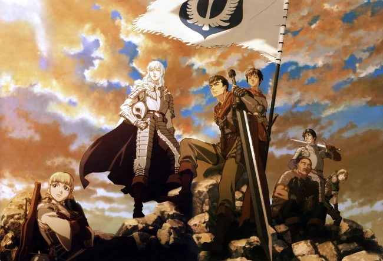

Bem vindo a wiki berserk

Sobre o berserk
(ベルセルク)Berserk é uma série de mangá escrita e ilustrada por Kentaro Miura. Situada em um mundo de fantasia sombria medieval inspirado na Europa, a história gira em torno dos personagens Guts, um mercenário solitário, e Griffith, o líder de um bando de mercenários chamados de Bando do Falcão. Temas como isolamento, camaradagem, e a questão de se a humanidade é fundamentalmente boa ou má permeiam a história, enquanto ela explora o melhor e o pior da natureza humana. Tanto o mangá como as animações são conhecidos por sua violência pesada.